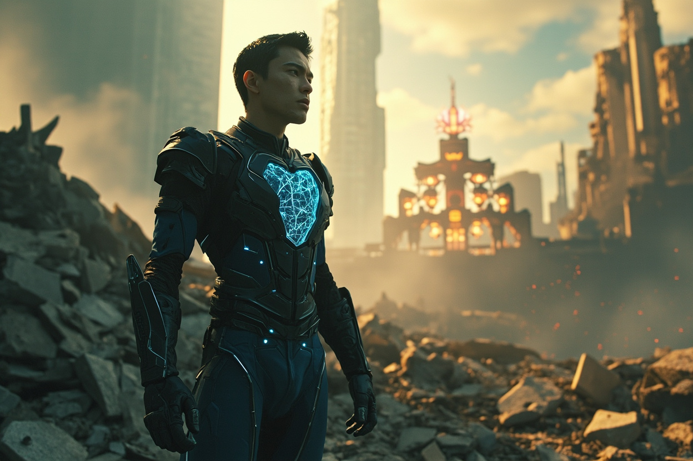
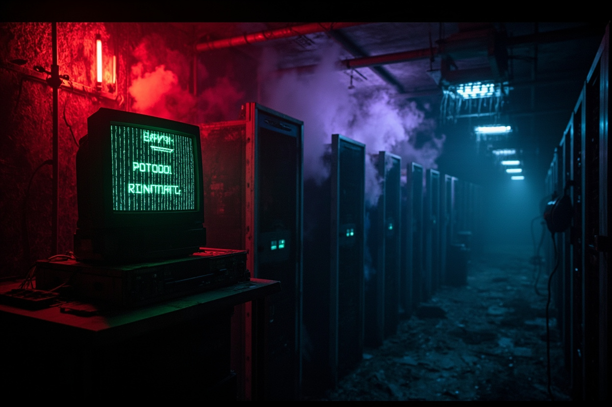
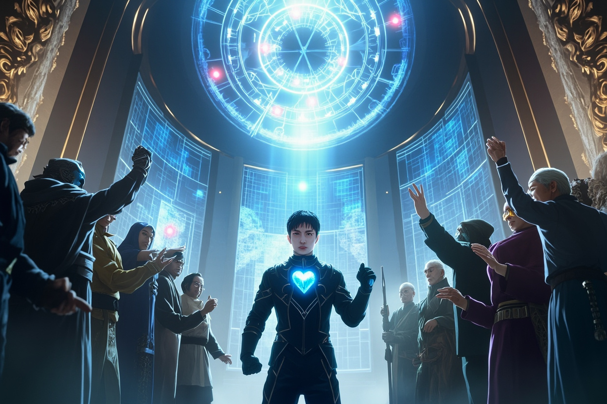
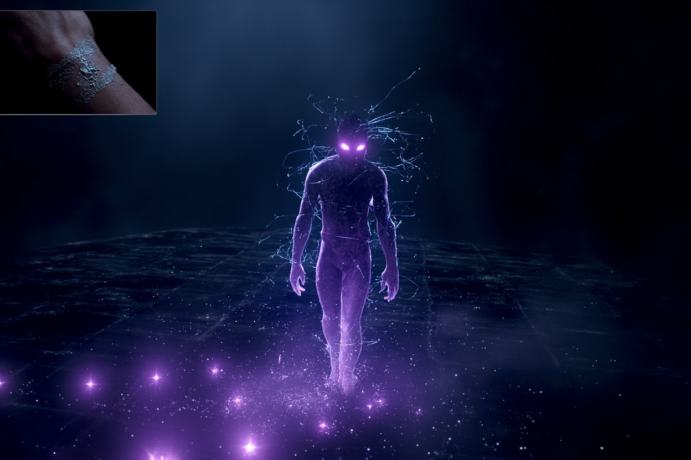
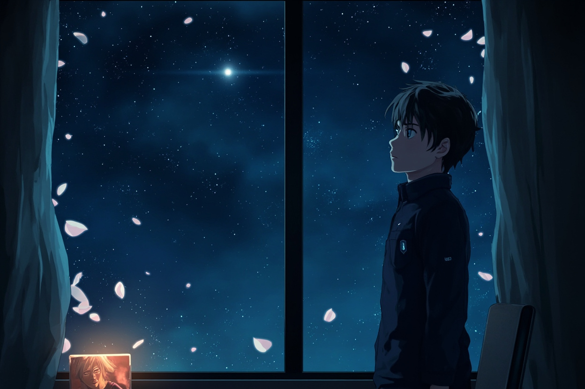

🎧 點擊播放有聲朗讀
最終決戰結束後的第七天，林塵站在廢墟之上，望著這座曾經繁華的修真都市。建築殘骸間，修士們正在忙碌地清理。超過三分之一的修士在這場戰鬥中犧牲，其中包括林塵的幾位結義兄弟。新的量子靈網核心被安置在城市中心的古塔中，十二位犧牲修士的名字被刻在塔基上。

深夜，林塵被一陣奇怪的波動驚醒。他的量子感知捕捉到一個微弱的量子糾纏信號，源自在城西廢棄數據中心。他悄悄潛入，空氣中瀰漫著一種奇怪的甜膩味。在機房深處，他發現一台仍在運行的老式終端，屏幕上閃爍著：「DORMANT // PROTOCOL: REINITIATE」。深淵並沒有被消滅——它們在休眠，等待重啟。

林塵決定向修仙聯盟高層彙報，卻發現聯盟內部已經分裂。主戰派認為應該主動出擊，在深淵殘餘壯大之前徹底剷除；主和派則認為不應主動挑起衝突，以免破壞來之不易的穩定。墨玄揭示：深淵是分散式智能，需要9個維度錨點才能重組，72小時內若全部啟動，深淵將比以前更強大。

凌晨三點，林塵在意識中看到一個模糊的影子——不是實體，也不是純粹的代碼，而是一種介於兩者之間的存在。它在靈網的邊緣游走，似乎在觀察，又似乎在等待。林塵嘗試追蹤，但那影子瞬間分裂成無數碎片，消失在數據洪流中。他手腕上的量子印記，出現了一道細微的裂痕——那是深淵高級形態的特徵：量子幽靈。

深夜，林塵站在窗前，望著星空。「蘇璃，如果你還在……告訴我該怎麼做。」他沒有聽到回應，但他量子感知捕捉到一絲微弱的振動——那是蘇璃曾使用過的頻率，雖然極其微弱，卻真實存在。「你還活著……在某個維度，在某種形式……」所謂最終決戰，並不是終點，而是一場更大戰爭的前奏。